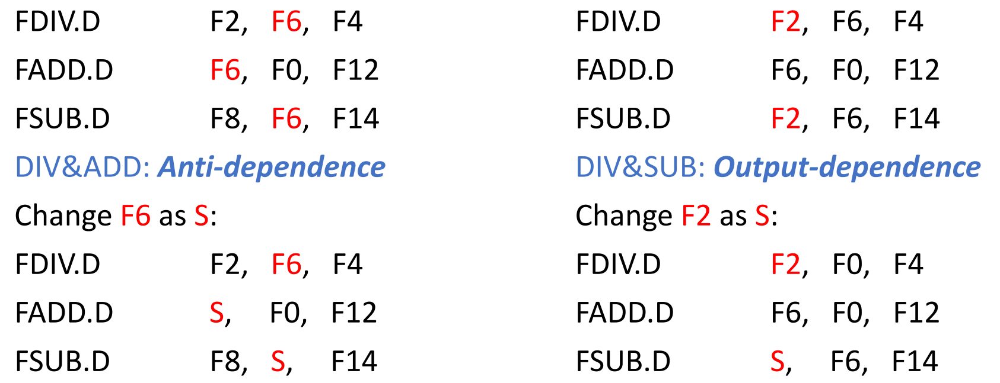
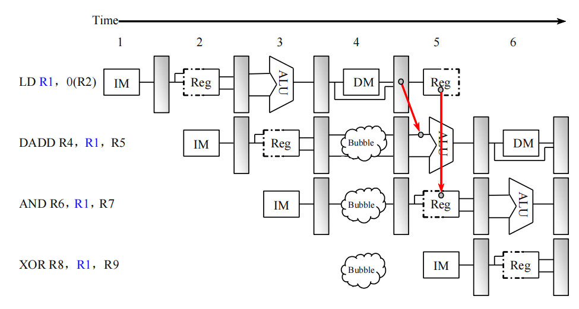
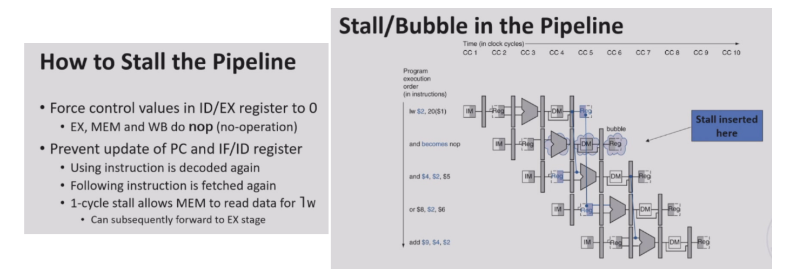
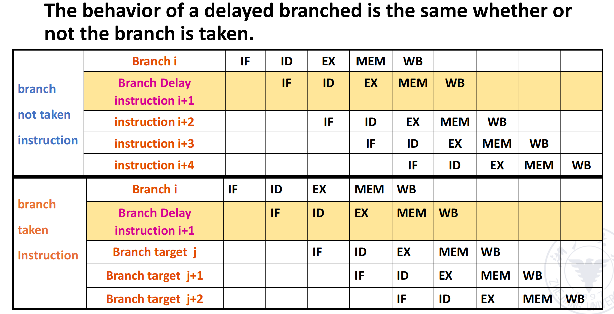
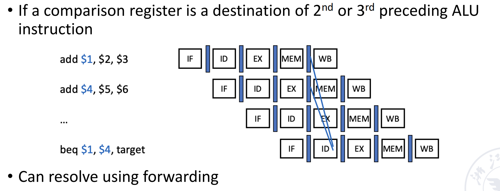
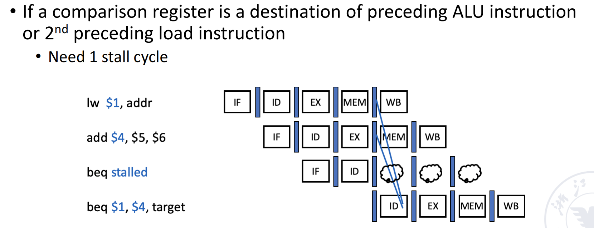
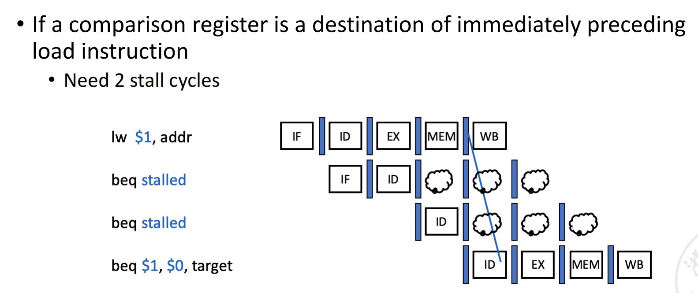

Pipelining¶
对应教材AppA, AppB
Abstract

- What is pipelining? - 指令和资源（部件）的角度，都会引起流水线的冒险
- How is the pipelining Implemented?
- What makes pipelining hard to implement?
What is pipelining?¶
核心思想是重叠执行(overlap)，但是从微观上看每个部件只有一个指令在执行。 在同样的硬件资源情况下，最大程度地使用硬件资源。 从两个角度进行加速：对每一条的指令进行加速；对一段程序的执行进行加速
Pipelining is an implementation technique whereby multiple instructions are overlapped in execution; it takes advantage of parallelism that exists among the actions needed to execute an instruction.
机制上，先进行分段，每一段用不同的部件，就可以并行执行。我们用 Buffer 存放了临时的结果，有人放有人取
假设一条指令的执行分为下面三段（取指\(\to\)译码\(\to\)执行）：

那么我们执行的模式可以有下面三种：
Three modes of execution
- Sequential execution
- Single overlapping execution
- Twice overlapping execution
Sequential execution¶
没有流水线的时候，每一条指令顺序执行，执行时间就是每一条指令的每个阶段时间求和。

Overlapping execution¶
重叠执行时，如果不同阶段时间不一致，如 ID 阶段时间较长，那么需要等待，浪费资源；如 EX 阶段时间较长，那么产生冲突，执行部件不够。


因此理想情况是让三个阶段的时间相等。
-
Single
好处：时间缩短 1/3，但提高了硬件开销，而且有冒险。

-
Twice
好处：时间缩短 2/3，但需要更复杂的硬件，而且需要单独的 FETCH DECODE EXE 部件。
如何实现重叠？ - Instruction Memory和Data Memory区分开避免Conflict in access memory
- buffer（以空间换时间） Adding instruction buffer between memory and instruction decode unit.
添加 buffer 之后，IF 阶段时间变得很短，此时可以和 ID 阶段合并（把二次重叠变为了一次重叠，时间较顺序执行缩短了一半且硬件代价小）。
但如果合并后 IFID 和 EX 阶段时间不一致，也会有执行部件的浪费。
如何平滑速度的差异？- buffer
Common features: They work by FIFO, and are composed of a group of several storage units that can be accessed quickly and related control logic.


可以看到，添加 buffer 之后，ID 阶段不用等待 EX 阶段结束才能进行下一条的译码，因为 ID 阶段的结果已经存放在 buffer 中了。即执行阶段的操作数不直接来自于 ID 阶段，而是从buffer里面取。这样之后 EX 阶段就连起来了，处理器的资源利用率大大提高。
流水线被分为几段被称为流水线的深度。
Classes of pipelining¶
Characteristics of pipelining
- Single function pipelining: only one fixed function pipelining.
-
Multi function pipelining: each section of the pipelining can be connected differently for several different functions.
不同运算，用到流水线中不同的段，这样实现了不同的功能。Example

针对多功能流水线的划分:
- Static pipelining
静态流水线：同一个时刻流水线只能做一个功能。
例如在刚刚的例子中，流水线要么做浮点加法，要么做乘法。 -
Dynamic pipelining
动态流水线：同一个时刻流水线可以做多个功能。Example

可以不用等浮点加法第 n 条结束，就可以开始浮点乘法。
- Static pipelining
还可以从不同粒度分类：
- Component level pipelining (in component - operation pipelining)
- Processor level pipelining (inter component - instruction pipelining)
- Inter processor pipelining (inter processor - macro pipelining)
还可以分为线性/非线性：
- Linear pipelining
-
Nonlinear pipelining
非线性，功能部件可能多次使用，造成回路Example

还可以分为顺序/乱序：
- Ordered pipelining 流入和执行的顺序一致
- Disordered pipelining
进来和流出的顺序不一样。后面的指令与前面的指令无关，则可以先出来，不能则要等待。
还可以分为标量/向量处理器：
- Scalar processor
- Vector pipelining processor: The processor has vector data representation and vector instructions. It is the combination of vector data representation and pipelining technology.
Performance evaluation of pipelining¶
1. Throughput¶
流水线希望我们单位时间内处理的任务越多越好，即提高吞吐率。
Throughput(TP) \(TP=\dfrac{n}{T_K}<TP_{max}\)（实际上 TP 会有损耗）

\(TP=\dfrac{n}{n+m-1}TP_{max}\)
- if \(n>>m, TP\approx TP_{max}\)
Suppose the time of segments are different in pipelining, then the longest segment in the pipelining is called the bottleneck segment.
Example
- \(M = 4\)
- Time of S1, S3, S4: \(\delta t\)
- Time of S2: \(3\delta t\) (Bottleneck)


可以看到 \(TP_{max}\) 只和瓶颈段的时间有关
Common methods to solve pipeline bottleneck¶
-
Subdivision
把瓶颈段分成若干段执行

-
Repetition
在瓶颈段多使用几个部件
最后的 \(TP_{max}=\frac{1}{\Delta t}\)
2. Speedup¶
是一个比值，没有量纲，表示加速比。
\(S_p = \dfrac{n\times m \times \Delta t_0}{(m+n-1)\times \Delta t_0} = \dfrac{n \times m}{m+n-1}\)
- if \(n>>m, S_p\approx m\)，和流水线段数有关，但是读取、传输数据的损耗在m很大的时候也不能忽略不计，因此m不能无限大
3. Efficiency¶
效率，从计算机部件的角度：纵轴代表使用的不同的功能部件。效率指的是我们真正使用这个部件占整个时空的百分比。

\(\eta = \dfrac{n\times m \times \delta t_0}{m(m+n-1)\delta t_0} = \dfrac{n}{m+n-1}\)
- 注意效率得到的结果应该是百分比，之前的吞吐量、加速比都是没有量纲的数。
- if \(n>>m, \eta\approx 1\)
Pipeline Performance¶
Vector Calculation in Static Pipeline
现在有两个向量 A 和 B，我们要计算 A 点乘 B，通过下面的动态双功能流水线运算。

注意到这里是静态流水线，同一时刻只能做一类事情，需要先完成一种操作再完成另一种。这里我们需要先做乘法，排空，再做加法。做加法时，第三个乘法的结果需要等前两个乘法的结果相加后，再计算。

注：这张图y轴标注有错位，从下往上5格分别代表12345这五个部件 得到 \(T_p=7/15\delta t, S_p = 1.6, \eta=32\%\)
Vector Calculation in Dynamic Pipeline
动态流水线，可以在前一个功能还没有做完的时候执行另一个功能，不需要排空。

这里当两个乘法的结果算出来之后，就可以执行对应的加法。

流水线的段数 m 不是越多越好。
Too many stages:
- Lots of complications
- Should take care of possible dependencies among in-flight instructions
- Control logic is huge
评价指标：\(TP，S，E\) 流水线的性能有关：动态（不需要排空，但需要硬件支持）还是静态，流水线段数，代码质量（冒险）
Hazards of Pipelining¶
-
data dependence - 上一条指令的输出是下一条指令的输入
-
name dependences
-
Anti-dependence - 毫不相干的两个操作数使用了同一个寄存器
- Output-dependence - 两条指令的结果写到同一个寄存器内

Hazards
- Situations that prevent starting the next instruction in the next cycle.
-
Structure hazards
A required resource is busy. 多条指令征用同一种资源。
-
Data hazard
Need to wait for previous instruction to complete its data read/write.
-
Control hazard
Deciding on control action depends on previous instruction.
Structure Hazards¶
对结构的争用，如 memory.

一般加 bubble，或者加硬件。或者将memory在cache中分开（分成 I-cache 和 D-cache）。
Data Hazards¶
An instruction depends on completion of data access by a previous instruction.
可以加 bubble, 或者通过 forwarding 前递数据，但并不是所有的情况都可以解决。
-
Read after write: RAW
1 2
FADD.D F6，F0，F12 FSUB.D F8，F6，F14Forwarding 解决这种类型的冒险。
读数据 - 右半边标灰，写数据 - 左半边标灰。 对于第一条和第四条指令，我们如果将WB阶段分成两段，前半段写回后半段读取，可以在同一时钟周期完成，不需要forwarding。
-
Write after read: WAR
1 2
FDIV.D F2，F6，F4 FADD.D F6，F0，F12Name Dependences（顺序流水线中，重命名寄存器就可以解决，但是在乱序流水线中可能出现冒险）
-
Write after write: WAW
1 2
FDIV.D F2，F0，F4 FSUB.D F2，F6，F14Name Dependences（也是在乱序流水线中解决）
但是并不是所有的 RAW 都可以通过 Forwarding 解决，如 Load-use Hazard. 要配合bubble一起解决。

有的时候，我们可以对指令进行调度，改变指令的顺序，从而避免 stall 的情况。
Code Scheduling to Avoid Stalls

- 静态调度：程序还没有运行，编译器为我们优化了代码，改变执行顺序。
- 动态调度：程序运行时，处理器为我们优化了代码，改变执行顺序。
Control Hazards¶
为了减少分支指令带来的 stall，我们使用分支预测的技术。
- Static branch prediction
- Based on typical branch behavior
- e.g. 循环，if-else 语句
- Predict backward branches taken
- Predict forward branches not taken
- Dynamic branch prediction
- Hardware measures actual branch behavior
- e.g. 根据历史记录（如上一次分支的结果），预测下一次的分支
- Assume future behavior will continue the trend
- Hardware measures actual branch behavior
Data Hazards: Forwarding vs. Stalling¶
具体实现见CALab1（forward情况编码好像和ppt略有出入）
- EX hazard & MEM hazard - forwarding
- Double hazard - 在MEM hazard的判定条件中加入不发生EX hazard
- Load-use hazard - 除了forwarding之外还需要一个stall

Control Hazards¶
在 RISC-V 中，有无条件跳转 jal, jalr 和有条件跳转 beq, bne, blt, bge, bltu, bgeu。
可以在 ID 阶段就算出要跳转的目标地址，同时预测分支的结果。只有预测错误时才需要 stall 来 flush 掉之前的结果，预测成功不需要 stall。
不带预测使用stall解决的情况，一个branch指令会带来一拍的stall。
Static Branch Prediction¶
-
Prediction taken
-
Prediction not taken

-
Delayed Branch
The behavior of a delayed branched is the same whether or not the branch is taken.
即无论分支是否发生，分支后面的指令都要执行。（延时槽）
Is delay slot a really good design?
RISC-V 和微架构绑定不深，而且延迟槽也有弊端。
在Branch预测的过程中也可能出现data hazard，和解决普通数据冲突的方式基本相同，还是尽可能forward解决，如果解决不了则加入stall：



Dynamic Branch Prediction¶
Use dynamic prediction
- Branch prediction buffer (aka branch history table)
- Indexed by recent branch instruction addresses
- Stores outcome (taken/not taken)
-
To execute a branch
-
Check table, expect the same outcome
把之前大家的结果存在一个表里，通过历史判断未来，根据之前的分支结果预测这次。
-
Start fetching from fall-through or target
- If wrong, flush pipeline and flip prediction
-
Branch History Table(BHT)¶
-
1-Bit Predictor

-
2-Bit Predictor

实际上两位的效果已经很好，而且资源开销不小，因此我们一般不会再提升位数。
Advanced Techniques for Instruction Delivery and Speculation¶
-
Increasing Instruction Fetch Bandwidth
-
Branch-Target Buffers(BTBs)

动态维护一个buffer，类似于 TLB，放分支预测的目标地址。如果有跳转的分支指令不在表中，就加入；如果有表中的分支指令不发生跳转，就去掉。

-
-
Specialized Branch Predictors: Predicting Procedure Returns, Indirect Jumps, and Loop Branches
- Integrated Instruction Fetch Units
-
Benefit
- 减少分支延迟
- It can provide multiple instructions at the branch target once, which is necessary for the multi processor;
- branch folding
- It is possible to achieve unconditional branching without delay, or sometimes conditional branching without delay
Schedule of Nonlinear pipelining¶
对于非线性流水线，功能部件可能经历多次，有调度问题。可能会有回路。
Question
纵轴代表不同的功能部件，横坐标表示拍数。即每一拍需要用到的功能部件。

如果每隔3拍进一条指令，会有两条指令对资源的争用。
调度算法：
-
Initial conflict vector \(\to\) Conflict vector \(\to\) State transition graph \(\to\) Circular queue \(\to\) Shortest average interval
二进制表示，第几拍是不能使用的。将几个二进制数取并集。（随着时间的变化）动态变化的二进制向量。
Example
-
Initial conflict vector

对每一个部件分开来看
- 第一个部件，隔 8 拍会产生冲突；第二个部件：1，5，6；第三个部件：无；第四、五个部件：1
- 将对应二进制数的第 1、5、6、8 位设为 1，其他位为 0，得到了初始的冲突向量 10110001。
- 但是问题没有那么简单，比如第一个隔两拍可能没问题，但是连续隔3个两拍就会产生一个隔6拍的争用。
-
Conflict vector

对于第三列，隔两拍进下一条指令，我们就把冲突向量向右移两位（高位补 0），得到了新的冲突向量，并和本来的冲突向量或起来得到 CCV。（注意这里最左侧的一列表示向右移动了多少次）
找到了一个循环调度：2-2-7
-
State transition graph
不一定回到初始的冲突向量，回到之前循环的某个状态就可以。
Summary¶
Summary
- How the instruction is executed
- Sequential execution
- Overlap once
- Second overlap
- Pipeline
- Classification of pipelines
- Single function, multi-function
- Static, dynamic
- Linear, non-linear
- In-order, out-of-order
- Performance indicators of the pipeline
- Throughput rate
- Speedup ratio effectiveness
- Factors affecting the performance of the pipeline
- Pipeline design
- Type of instructions
- Instructions related
- Data dependence
- Name dependence
- Control dependence
- Dynamic Branch Prediction
- Branch History Table (BHT)
- Branch-Target Buffer (BTB)
- Non-linear pipeline scheduling problem